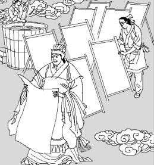

联系我们:100010（工作时间：24h） 在线客服（24h无人接待）
自创备案号：1234-56789 Chrome商店下载版权与免责声明版权申诉出版物许可证
| 主页 | 造纸术 | 印刷术 | 火药 | 指南针 |
|
中国古代四大发明 |
2007年，英国《独立报》评出了改变世界的101个发明。中国的四大发明：造纸术、印刷术、指南针、火药及另一发明算盘赫然在列。本文着重介绍中国古代四大发明。造纸术 西汉初年我国发明了造纸术。1986年，甘肃天水放马滩出土的汉景帝时的纸，是迄今所知最早的纸。公元105年，东汉蔡伦改进了造纸术，称“蔡侯纸”。造纸术是书写材料的一次伟大革命。
蔡伦字敬仲，桂阳人也。……伦有才学，尽心敦慎，数犯严颜，匡弼得失。……伦乃造意，用树肤、麻头及敝布、鱼网以为纸。元兴元年奏上之，帝善其能，自是莫不从用焉，故天下咸称“蔡侯纸”。
|
———————————————————————————————————————————————————————————————————————————————————————
联系我们:100010（工作时间：24h） 在线客服（24h无人接待）
自创备案号：1234-56789 Chrome商店下载版权与免责声明版权申诉出版物许可证